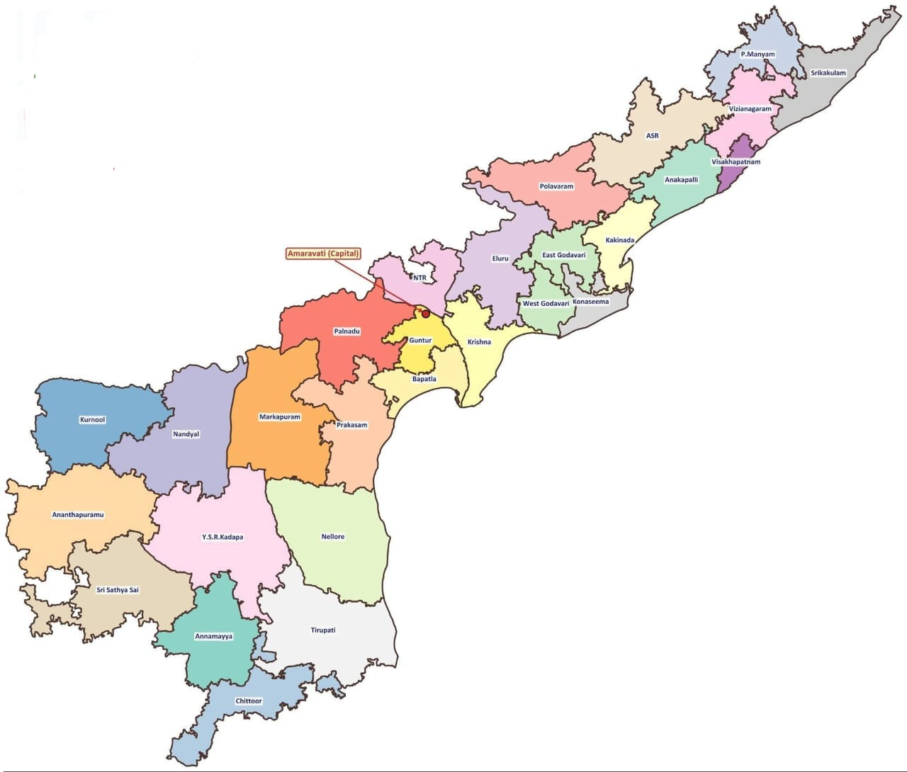

ఆంధ్రప్రదేశ్ 28 జిల్లాల మ్యాప్
AP 28 Districts Map (post-2025 | 1,62,970 చ.కి.మీ)

📌 క్విక్ రిఫరెన్స్:
రాయలసీమ (9) = కర్నూలు, నంద్యాల, అనంతపురం, శ్రీ సత్యసాయి, YSR కడప, అన్నమయ్య, చిత్తూరు, తిరుపతి, మార్కాపురం 🆕 |
కోస్తాంధ్ర (12) = కృష్ణ, NTR, గుంటూరు, పల్నాడు, బాపట్ల, ప్రకాశం, SPS నెల్లూరు, కోనసీమ, తూ.గోదావరి, ప.గోదావరి, ఏలూరు, కాకినాడ |
ఉత్తరాంధ్ర (7) = శ్రీకాకుళం, పార్వతీపురం, విజయనగరం, విశాఖపట్నం, అనకాపల్లి, ASR, పోలవరం 🆕
🚨 ట్రిక్స్: 9+12+7=28 | ASR + పోలవరం = 3 రాష్ట్రాల సరిహద్దు | తెలంగాణతో 8 జిల్లాలు (అత్యధికం) | విశాఖ = అతి చిన్న (1,048) | YSR కడప = అతి పెద్ద (11,228)
Source: AP Revenue Dept / Survey of India (Official 28-district map, April 2026)
అధ్యాయం 1: ఆంధ్రప్రదేశ్ ఉనికి - క్షేత్రీయ అమరిక
Chapter 1: Location & Physical Setting of Andhra Pradesh
Source: M.C. Reddy Publications | Cross-ref: AP Socio-Economic Survey 2024-25, NHO, Gazette 2026 | Pages 1-9
1.1 ఆంధ్రప్రదేశ్ ఆవిర్భావం — చారిత్రక నేపథ్యం
నమస్కారం! ఆంధ్రప్రదేశ్ (Andhra Pradesh) ఎలా ఏర్పడిందో తెలుసుకుందాం. మూడు కీలక తేదీలు (Three Key Dates) — ఇవి మీ బంగారు సూత్రం!
| తేదీ | సంఘటన | వివరాలు |
|---|
| 1953 అక్టో 1 | ఆంధ్ర రాష్ట్రం ఏర్పాటు | మద్రాస్ నుండి, 11 జిల్లాలు (7 కోస్తా + 4 రాయలసీమ), కర్నూల్ రాజధాని. భాషా ప్రాతిపదికన దేశంలో మొదటి రాష్ట్రం! |
| 1956 నవం 1 | ఆంధ్రప్రదేశ్ ఏర్పాటు | ఆంధ్ర + హైదరాబాద్ నిజాం తెలుగు ప్రాంతాలు కలిసి. ఫజల్ అలీ కమిటీ (SRC) సిఫారసు. హైదరాబాద్ రాజధాని. |
| 2014 జూన్ 2 | తెలంగాణ విభజన | AP Reorganisation Act 2014. తెలంగాణ 29వ రాష్ట్రం. AP కు 13 జిల్లాలు మిగిలాయి. |
💥 పొట్టి శ్రీరాములు: 1952 అక్టోబర్ 19 నుండి నిరాహారదీక్ష ప్రారంభం → 58 రోజుల తర్వాత డిసెంబర్ 15న మరణం → ఆంధ్ర రాష్ట్రం ఏర్పాటుకు కారణం!
🚨 ఎగ్జామ్ ట్రిక్: "1-5-3, 1-5-6, 2-0-1-4" = 1953 1956 2014 — ఈ 3 సంవత్సరాలు guarantee ప్రశ్నలు!
1.2 జిల్లాల చారిత్రక నేపథ్యం & పునర్ వ్యవస్థీకరణ
| సంవత్సరం | జిల్లాల సంఖ్య | సంఘటన |
|---|
| 1956 | 20 | AP ఏర్పాటు సమయంలో |
| 1970 | 21 | ఒంగోలు (ప్రకాశం) జిల్లా ఏర్పాటు |
| 1978 | 22 | రంగారెడ్డి జిల్లా |
| 1979 | 23 | విజయనగరం జిల్లా |
| 2014 జూన్ 2 | 13 | తెలంగాణ వేరైన తర్వాత AP కు 13 మిగిలాయి |
| 2022 ఏప్రిల్ 4 | 26 | 13 → 26 (8 రాయలసీమ + 11 కోస్తాంధ్ర + 7 ఉత్తరాంధ్ర), 670 మండలాలు |
| 2025 డిసెంబర్ 31 | 28 | మార్కాపురం (ప్రకాశం నుండి) + పోలవరం (ఏలూరు నుండి) — కొత్తవి! |
💥 2025 అప్డేట్: ప్రస్తుతం AP లో 28 జిల్లాలు! పాత పుస్తకాల్లో 26 ఉంటుంది. AP District Formation Act, 1974 — జిల్లాల ఏర్పాటు చట్టం.
🚨 ఎగ్జామ్ ట్రిక్: దేశంలో మొత్తం జిల్లాలు: 727. ఎక్కువ: ఉత్తరప్రదేశ్ (75). తక్కువ: గోవా (2). AP: 28.
1.3 భౌగోళిక స్థానం — అక్షాంశ-రేఖాంశాలు
ఆంధ్రప్రదేశ్ భారతదేశ దక్షిణ-తూర్పు భాగంలో ఉంది.
| అంశం | విలువ | గమనిక |
|---|
| అక్షాంశం (Latitude) | 12°41' — 19°07' N | దక్షిణం → ఉత్తరం |
| రేఖాంశం (Longitude) | 76°50' — 84°40' E | పశ్చిమం → తూర్పు |
| ఆకారం | గద ఆకారం (Mace Shape) | Exam favourite! |
| బిరుదు | "The Sunrise State" | తూర్పు అత్యంత ముందుగా సూర్యోదయం |
🚨 మెమరీ ట్రిక్: 12 19 76 84 — ఈ 4 సంఖ్యలు గుర్తుపెట్టుకోండి!
1.4 విస్తీర్ణం, సరిహద్దులు & పొరుగు రాష్ట్రాలు
| అంశం | విలువ |
|---|
| మొత్తం విస్తీర్ణం | 1,62,970 చ.కి.మీ |
| భారతదేశంలో శాతం | 4.87% |
| భారతదేశంలో ర్యాంక్ | 7వ అతిపెద్ద రాష్ట్రం (J&K 2019లో UT గా మారిన తర్వాత AP 8వ → 7వ స్థానానికి చేరింది) |
| 125+ దేశాల కంటే పెద్దది! | ✅ |
పొరుగు రాష్ట్రాలు & సరిహద్దు జిల్లాలు
| దిశ | రాష్ట్రం | సరిహద్దు జిల్లాలు |
|---|
| ఉత్తరం/ఈశాన్యం | ఒడిశా | శ్రీకాకుళం, పార్వతీపురం మన్యం, అల్లూరి సీతారామరాజు |
| ఈశాన్యం | ఛత్తీస్గఢ్ | అల్లూరి సీతారామరాజు (ఒకే జిల్లా!) |
| ఉత్తరం/పశ్చిమం | తెలంగాణ | 7 జిల్లాలు (అత్యధికం!): అల్లూరి సీతారామరాజు, ఏలూరు, NTR, పల్నాడు, ప్రకాశం, నంద్యాల, కర్నూలు
🟢 28 జిల్లాలు (post-2025): 8 జిల్లాలు — పై 7 + పోలవరం (ASR నుండి carved, Bhadradri Kothagudem TS తో సరిహద్దు) |
| పశ్చిమం | కర్ణాటక | కర్నూల్, అనంతపూర్, సత్యసాయి, అన్నమయ్య, చిత్తూరు |
| దక్షిణం | తమిళనాడు | చిత్తూరు, తిరుపతి |
| తూర్పు | బంగాళాఖాతం | 12 తీరప్రాంత జిల్లాలు |
🚨 ట్రిక్: 🟢 26 జిల్లాలు: అల్లూరి సీతారామరాజు — ఏకైక జిల్లా 3 రాష్ట్రాలతో (ఒడిశా + ఛత్తీస్గఢ్ + తెలంగాణ) సరిహద్దు!
🟢 28 జిల్లాలు (post-2025): పోలవరం కూడా 3 రాష్ట్రాలతో సరిహద్దు! (చింతూరు RD = ఒడిశా/ఛత్తీస్గఢ్/తెలంగాణ tri-junction) ∴ ASR + పోలవరం = 2 జిల్లాలు
1.5 తీరప్రాంతం — NHO సర్వే & సముద్ర తీరం
NHO రీ-వెరిఫికేషన్ సర్వే — పూర్తి వివరణ
(Source: Indian Naval Hydrographic Office 2023-24 Annual Report; Shine India Current Affairs p.120; AP Socio-Economic Survey 2024-25)
నేపథ్యం: ఇండియన్ నావల్ హైడ్రోగ్రాఫిక్ ఆఫీస్ (Indian Naval Hydrographic Office) + సర్వే ఆఫ్ ఇండియా (Survey of India) — 1970 డేటా ప్రకారం 9 రాష్ట్రాలు + 4 UTs తీరం = 7,516 కి.మీ అని లెక్కించారు.
రీ-వెరిఫికేషన్ ఎందుకు? నేషనల్ మారిటైం సెక్యూరిటీ కో-ఆర్డినేటర్ (NMSC) తీరప్రాంతాన్ని కొత్తగా కొలవడానికి నూతన విధివిధానాలు నిర్దేశించింది.
👉 ఎందుకు NMSC కొలిచింది? — సరైన తీర పొడవు తెలిస్తేనే: (1) సముద్ర సరిహద్దుల (EEZ — Exclusive Economic Zone) నిర్ణయం, (2) తీర భద్రతా పోస్టుల ఏర్పాటు, (3) చట్టపరమైన జల హక్కుల నిర్వహణ సాధ్యమవుతాయి.
| అంశం | పాత పద్ధతి (1970) | కొత్త పద్ధతి (2023-24) |
|---|
| కొలిచే విధానం | నేరుగా ఉన్న దూరం (straight-line distance) మాత్రమే | మలుపులు (curves), వంపులను (bends) కూడా లెక్కించారు! |
| భారతదేశ మొత్తం తీరం | 7,516 కి.మీ | 11,098.81 కి.మీ (48% increase!) |
| Mainland / Islands | — | 7,870.51 + 3,228.30 కి.మీ |
| ఆమోదం | CPDAC — అన్ని coastal States/UTs concurrence తో |
| తదుపరి అప్డేట్ | ప్రతి 10 సంవత్సరాలకు (from 2024-25) |
💥 KEY POINT: భూమి భౌతికంగా (physically) మారలేదు! మలుపులు, వంపులను (curves & bends) కూడా లెక్కించడం వల్ల పొడవు పెరిగింది! "ఎందుకు పెరిగింది?" — ఎగ్జామ్లో తప్పక అడుగుతారు!
రాష్ట్రాలవారీ తీరం — పాత vs కొత్త (State-wise)
| ర్యాంక్ | రాష్ట్రం | పాత (కి.మీ) | కొత్త NHO (కి.మీ) | % పెరుగుదల |
|---|
| 1 | గుజరాత్ | 1,214.70 | 2,340.62 | 92.69%! (అత్యధికం!) |
| 2 | తమిళనాడు | 906.90 | 1,068.69 | +17.84% |
| 3 | ఆంధ్రప్రదేశ్ | 973.70 | 1,053.07 | +8.15% |
| 4 | మహారాష్ట్ర | 652.6 | 877.97 | +34.54% |
| 5 | పశ్చిమ బెంగాల్ | 157.5 | 721.02 | +357.8%! |
| 6 | కేరళ | 569.7 | 600.15 | +5.35% |
| 7 | ఒడిశా | 476.4 | 574.71 | +20.63% |
| 8 | కర్ణాటక | 280.0 | 343.30 | +22.61% |
| 9 | గోవా | 160.5 | 193.95 | +20.84% |
కేంద్ర పాలిత ప్రాంతాలు (Union Territories)
| UT | పాత (కి.మీ) | కొత్త (కి.మీ) | మార్పు |
|---|
| అండమాన్ & నికోబార్ | — | 3,083.50 | +57.16% |
| లక్షద్వీప్ | — | 144.80 | — |
| దమన్ & దీవ్ | — | 54.38 | — |
| పుదుచ్చేరి | 47.00 | 42.65 | -9.26%! DECREASED! |
💥 షాకింగ్ ఫ్యాక్ట్లు:
1. గుజరాత్ = అత్యధిక % పెరుగుదల (92.69%!)
2. అండమాన్ నికోబార్ = 57.16% పెరుగుదల
3. పుదుచ్చేరి (యానం, కరైకాల్ సహా) (కరైకాల్ = TN లోని Puducherry enclave; కరికట్ = Calicut/Kerala — తప్పు) = ఏకైకంగా DECREASED! (47 → 42.65 కి.మీ)
4. TN overtook AP! పాత: AP (973.70) > TN (906.90). కొత్త: TN (1,068.69) > AP (1,053.07)!
5. AP తీరం 8.15% మాత్రమే పెరిగింది
🚨 ఎగ్జామ్ SUPER TRICKS:
ర్యాంకింగ్ Gujarat (1st) → TN (2nd) → AP (3rd) — AP 2వ → 3వ!
ఎందుకు? మలుపులు + వంపులు (curves & bends) = new method!
NMSC = National Maritime Security Coordinator — directed re-verification
తగ్గింది? పుదుచ్చేరి ONLY! (47→42.65)
అత్యధిక % గుజరాత్ (92.69%)
AP % 8.15% మాత్రమే
| AP తీరం వివరాలు | విలువ |
|---|
| తీరం (NHO updated) | 1,053.07 కి.మీ — 3వ పొడవైనది |
| AP తీరం % పెరుగుదల | 8.15% (973.70 → 1,053.07) |
| తీరప్రాంత జిల్లాలు | 12 (పుస్తకం ప్రకారం) |
| అతిపొడవు తీరం జిల్లా | శ్రీకాకుళం (పుస్తకం ప్రకారం) |
| తక్కువ తీరం జిల్లా | పశ్చిమగోదావరి (పుస్తకం ప్రకారం) |
జిల్లాల వారీ తీరం (District-wise Coastline — old 13 districts)
| ర్యాంక్ | జిల్లా (old) | తీరం (కి.మీ) | 2022 తర్వాత |
|---|
| 1 | తూ.గోదావరి | ~189.84 | తూ.గో + కాకినాడ + కోనసీమ (split!) |
| 2→1 | శ్రీకాకుళం | ~173.12 | అలాగే — 2022 తర్వాత No.1! |
| 3 | నెల్లూరు | ~172.10 | SPS నెల్లూరు |
| 4 | విశాఖపట్నం | ~136.98 | విశాఖ + అనకాపల్లి (split) |
| 5 | కృష్ణ | ~133.36 | కృష్ణ (NTR landlocked) |
| 6 | ప్రకాశం | ~107.18 | ప్రకాశం (మార్కాపురం landlocked) |
| 7 | గుంటూరు | ~64.24 | గుంటూరు + బాపట్ల (split) |
| 8 | విజయనగరం | ~32.78 | అలాగే |
| 9 | ప.గోదావరి | ~17.98 | ప.గోదావరి (ఏలూరు landlocked) |
తీరప్రాంత 12 జిల్లాలు (పుస్తకం): శ్రీకాకుళం, విజయనగరం, విశాఖపట్నం, అనకాపల్లి, కాకినాడ, కోనసీమ, ప.గోదావరి, కృష్ణ, బాపట్ల, ప్రకాశం, SPS నెల్లూరు, తిరుపతి
యానం (Yanam): తూ.గోదావరి జిల్లాలో ఉన్నా, Puducherry UT కి చెందినది — AP కాదు!
👉 ఎందుకు? యానం పూర్వం French వలస పాలన (French India) లో ఉంది. 1954లో Puducherry తో కలిసి భారత్లో విలీనమైంది. అందుకే AP లో భౌగోళికంగా ఉన్నా, పరిపాలనాపరంగా Puducherry UT కి చెందుతుంది.
1.6 రాజధాని అమరావతి & CRDA
| అంశం | వివరాలు |
|---|
| CRDA ఏర్పాటు | 2014 డిసెంబర్ 30 (CRDA Act) |
| CRDA విస్తీర్ణం | 8,603.32 చ.కి.మీ |
| రాజధాని నగర విస్తీర్ణం | 217.23 చ.కి.మీ |
| ప్రకటన తేదీ | 2015 ఏప్రిల్ 23 — "The People's Capital" |
| శంకుస్థాపన | 2015 అక్టోబర్ 22 (PM మోదీ) |
| స్థానం | గుంటూరు-కృష్ణ జిల్లాల మధ్య |
💥 2026 ఏప్రిల్ BREAKING!
• 2026 ఏప్రిల్ 1: లోక్సభలో AP Reorganisation Amendment Bill ఆమోదం
• 2026 ఏప్రిల్ 6: Gazette Notification — అమరావతి ఏకైక రాజధాని (sole capital)!
• 2026 ఏప్రిల్ 7: రాష్ట్రపతి ఆమోదం
• 3 రాజధానుల వివాదం (2020-2024) ఇప్పుడు ముగిసింది!
1.7 జనాభా, జనసాంద్రత & వృద్ధి రేటు
| అంశం | విలువ | గమనిక |
|---|
| మొత్తం జనాభా (2011) | 4,95,77,103 (~4.95 కోట్లు) | భారతదేశంలో 10వ |
| భారతదేశ జనాభాలో % | 4.09% | Socio-Eco Survey |
| గ్రామీణ జనాభా (Rural) | ~34.97 మిలియన్ (70.53%) | AP ఇప్పటికీ Rural-dominant! |
| పట్టణ జనాభా (Urban) | ~14.61 మిలియన్ (29.47%) | |
| జనసాంద్రత | 304/చ.కి.మీ (Survey) / 308 (Book) | భారత సగటు: 382 |
| అత్యధిక పట్టణీకరణ | విశాఖపట్నం (47.45%) | |
| అత్యల్ప పట్టణీకరణ | శ్రీకాకుళం, పార్వతీపురం మన్యం | Rural/Tribal |
జనసాంద్రత — జిల్లాల వారీ (పుస్తకం ప్రకారం)
| అధిక జనసాంద్రత (Highest Density) |
|---|
| 1 | విశాఖపట్నం | 1,870/చ.కి.మీ (area 1,048 — అత్యల్పం!) |
| 2 | గుంటూరు | 856/చ.కి.మీ |
| అత్యల్ప జనసాంద్రత (Lowest Density) |
|---|
| 1 | అల్లూరి సీతారామరాజు | 78/చ.కి.మీ (గిరిజనం — అతి తక్కువ!) |
| 2 | ప్రకాశం | 160/చ.కి.మీ |
2011 Census: Most Urban = విశాఖపట్నం | Most Rural = అల్లూరి సీతారామరాజు
జనాభా వృద్ధి రేటు
| దశాబ్దం | వృద్ధి రేటు | గమనిక |
|---|
| 1961-71 | 18.88% | |
| 1981-91 | 21.13% | అత్యధిక వృద్ధి! |
| 2001-11 | 9.21% | తగ్గుతూ వస్తోంది (Demographic Transition) |
మండలాలు & పరిపాలన
| మొత్తం మండలాలు | ~688 (28 జిల్లాలు, 2025 తర్వాత) |
| Revenue Divisions | ~80 |
| గ్రామాలు | 6,858+ |
| మునిసిపల్ కార్పొరేషన్లు | 17 |
| మునిసిపాలిటీలు | 76+ |
అత్యధిక మండలాలు (Wikipedia/Gazette — 28 జిల్లాలు): YSR కడప (40), తిరుపతి & SPS నెల్లూరు (36), అనంతపురం & శ్రీ సత్యసాయి (32). అత్యల్ప: విశాఖపట్నం & ASR (11), పోలవరం (12)
⚠️ పుస్తకం 26-జిల్లాల data: ప్రకాశం 39, SPS నెల్లూరు 38, YSR 36 — ఇవి pre-2025 (మార్కాపురం carved out ముందు)
విస్తీర్ణంలో Top 4 & Bottom 4
🔵 26 జిల్లాలు (పుస్తకం — pre-2025):
| అతి పెద్ద (26 జిల్లాలు) |
|---|
| 1. ప్రకాశం | 14,322 |
| 2. అల్లూరి సీతారామరాజు | 12,251 |
| 3. YSR కడప | 11,228 |
| 4. SPS నెల్లూరు | 10,441 |
| అతి చిన్న (Area చ.కి.మీ) |
|---|
| 1. విశాఖపట్నం | 1,048 |
| 2. కోనసీమ | 2,083 |
| 3. ప.గోదావరి | 2,278 |
| 4. గుంటూరు | 2,443 |
🟢 28 జిల్లాలు (post-2025 — మార్కాపురం & పోలవరం carved out తర్వాత):
| అతి పెద్ద (28 జిల్లాలు) |
|---|
| 1. YSR కడప | 11,228 |
| 2. SPS నెల్లూరు | 10,441 |
| 3. అనంతపురం | 10,205 |
| 4. నంద్యాల | 9,682 |
| Changed areas |
|---|
| ప్రకాశం | 14,322 → 6,322 |
| ASR | 12,251 → 6,251 |
భూ పరివేష్టిత జిల్లాలు (పుస్తకం ప్రకారం)
| సముద్రతీరానికి గల జిల్లాల సంఖ్య: 12 |
|---|
| Coastal 12 | శ్రీకాకుళం, విజయనగరం, విశాఖపట్నం, అనకాపల్లి, కాకినాడ, కోనసీమ, ప.గోదావరి, కృష్ణ, బాపట్ల, ప్రకాశం, SPS నెల్లూరు, తిరుపతి |
| భూపరివేష్టిత (3) | YSR కడప, ?, గుంటూరు — సముద్ర తీరం & ఇతర రాష్ట్రాల సరిహద్దు రెండూ లేనివి |
అధిక సరిహద్దు జిల్లాలు (పుస్తకం ప్రకారం)
| YSR కడప & అల్లూరి సీతారామరాజు | 6 జిల్లాలతో సరిహద్దు (అత్యధికం!) |
| 2వ స్థానం | 5 జిల్లాలు |
| శ్రీకాకుళం | 4 జిల్లాలు |
🟢 26 జిల్లాలు: ASR = ఏకైక జిల్లా 3 రాష్ట్రాలతో సరిహద్దు: ఒడిస్సా + ఛత్తీస్గఢ్ + తెలంగాణ
🟢 28 జిల్లాలు: ASR + పోలవరం = 2 జిల్లాలు 3 రాష్ట్రాలతో సరిహద్దు (చింతూరు RD పోలవరంలో = tri-junction)
🚨 ట్రిక్: గ్రామీణ 70% > పట్టణ 30%. విశాఖ = అత్యధిక density (1,870). ASR = అత్యల్ప (78). 26 జిల్లాలు: ప్రకాశం = No.1 area (14,322). 28 జిల్లాలు: YSR కడప = No.1 (11,228). విశాఖ = అతి చిన్న (1,048). Coastal = 12. భూపరివేష్టిత = 3. మండలాలు = ~688. అత్యధిక mandals: YSR కడప (40).
1.8 లింగ నిష్పత్తి & అక్షరాస్యత
| అంశం | AP | భారతదేశ సగటు | పోలిక |
|---|
| లింగ నిష్పత్తి (2011) | 997 | 943 | AP > India ✅ |
| మొత్తం అక్షరాస్యత | 67.35% | 72.98% | AP < India ❌ |
| పురుష అక్షరాస్యత | 74.88% | — | |
| స్త్రీ అక్షరాస్యత | 59.96% | — | Gender Gap: 14.92% |
🚨 ట్రిక్: 67-75-60-997 = అక్షరాస్యత-పురుష-స్త్రీ-లింగనిష్పత్తి. AP లింగ నిష్పత్తి (997) > India (943) — positive! AP అక్షరాస్యత (67.35%) < India (72.98%) — negative!
1.9 మూడు ప్రాంతాలు — రాయలసీమ, కోస్తాంధ్ర & ఉత్తరాంధ్ర
| అంశం | రాయలసీమ (9) | కోస్తాంధ్ర (12) | ఉత్తరాంధ్ర (7) |
|---|
| భూమి | పీఠభూమి (Plateau) | మైదానం (Plains) | కొండలు + తీరం |
| వర్షపాతం | తక్కువ (~600mm) | ఎక్కువ (~1000mm) | అధికం (~1100mm) |
| నేలలు | నల్లరేగడి, ఎర్ర | ఒండ్రు (Alluvial) | ఎర్ర, లాటరైట్ |
| ప్రధాన పంటలు | వేరుశనగ, శనగలు | వరి, చెరకు | వరి, కాఫీ, జొన్నలు |
| ప్రత్యేకత | Drought-prone (కరవు) | Flood-prone (వరద) | Tribal + Industrial |
| అతిపెద్ద జిల్లా (28) | YSR కడప (11,228) | SPS నెల్లూరు (10,441) | ASR (6,251) |
రాయలసీమ 9 జిల్లాలు (8 పుస్తకం + మార్కాపురం 2025)
⚠️ DATA NOTE: విస్తీర్ణం & జనాభా = పుస్తకం + Wikipedia 100% match. RD/మండలాలు = Wikipedia/Gazette (updated). జిల్లా official websites outdated (pre-2022 data)!
| # | జిల్లా | విస్తీర్ణం (చ.కి.మీ) | జనాభా (2011) | RD | మండలాలు | ప్రత్యేకత |
|---|
| 1 | అనంతపురం | 10,205 | 22,41,105 | 03 | 32 | బంగారం (రామగిరి) |
| 2 | శ్రీ సత్యసాయి | 8,925 | 18,40,043 | 05 | 32 | పుట్టపర్తి |
| 3 | కర్నూలు | 7,980 | 22,71,686 | 03 | 27 | డైమండ్స్, సిమెంట్ |
| 4 | నంద్యాల | 9,682 | 17,81,777 | 04 | 30 | శ్రీశైలం, నల్లమల |
| 5 | YSR కడప | 11,228 | 20,60,654 | 05 | 40 | బారైట్ (ప్రపంచ అతిపెద్ద!) |
| 6 | అన్నమయ్య | 7,954 | 16,97,308 | 03 | 25 | హార్స్లీ హిల్స్ (AP ఊటీ) |
| 7 | చిత్తూరు | 6,855 | 18,72,951 | 03 | 28 | KA, TN సరిహద్దు |
| 8 | తిరుపతి | 8,231 | 21,96,984 | 04 | 36 | తిరుమల వెంకటేశ్వర |
| 9 | మార్కాపురం | 8,456 | 11,42,313 | 02 | 21 | 2025 కొత్తది! (ప్రకాశం నుండి) |
(Sources: Area/Population = M.C. Reddy Textbook Page 5 = Wikipedia match. RD/Mandals = Wikipedia/Gazette. పుస్తకం vs Wikipedia తేడాలు: శ్రీ సత్యసాయి RD 04→05, కర్నూలు M 26→27, నంద్యాల RD 03→04, YSR RD 04→05 M 36→40, అన్నమయ్య M 30→25, చిత్తూరు RD 04→03 M 32→28, తిరుపతి M 34→36)
కోస్తాంధ్ర 12 జిల్లాలు
(Source: Wikipedia/Official Gazette — Guntur verified against guntur.ap.gov.in)
| # | జిల్లా | విస్తీర్ణం (చ.కి.మీ) | జనాభా (2011) | RD | మండలాలు | ముఖ్యపట్టణం |
|---|
| 1 | కృష్ణ | 3,775 | 17,35,079 | 03 | 26 | మచిలీపట్నం |
| 2 | NTR | 3,316 | 22,18,591 | 03 | 20 | విజయవాడ |
| 3 | గుంటూరు | 2,443 | 20,91,075 | 02 | 18 | గుంటూరు |
| 4 | పల్నాడు | 7,298 | 20,41,723 | 03 | 28 | నరసరావుపేట |
| 5 | బాపట్ల | 3,829 | 15,86,918 | 03 | 20 | బాపట్ల |
| 6 | ప్రకాశం | 6,322 | 17,67,633 | 03 | 28 | ఒంగోలు |
| 7 | SPS నెల్లూరు | 10,441 | 24,69,712 | 03 | 36 | నెల్లూరు |
| 8 | కోనసీమ | 2,083 | 17,19,093 | 03 | 19 | అమలాపురం |
| 9 | తూ.గోదావరి | 2,561 | 18,32,332 | 02 | 22 | రాజమహేంద్రవరం |
| 10 | ప.గోదావరి | 2,278 | 18,44,898 | 03 | 20 | భీమవరం |
| 11 | ఏలూరు | 6,579 | 20,06,737 | 03 | 28 | ఏలూరు |
| 12 | కాకినాడ | 3,019 | 20,92,374 | 02 | 21 | కాకినాడ |
⚠️ ప్రకాశం area: పుస్తకం 14,322 (pre-2025, మార్కాపురం carved out ముందు). Post-2025: 6,322. SPS నెల్లూరు mandals: పుస్తకం 38 → Gazette 36.
ఉత్తరాంధ్ర 7 జిల్లాలు (2025 పోలవరం తో సహా)
(Source: Wikipedia/Official Gazette)
| # | జిల్లా | విస్తీర్ణం (చ.కి.మీ) | జనాభా (2011) | RD | మండలాలు | ముఖ్యపట్టణం |
|---|
| 1 | శ్రీకాకుళం | 4,591 | 21,91,471 | 03 | 30 | శ్రీకాకుళం |
| 2 | పార్వతీపురం మన్యం | 3,659 | 9,25,340 | 02 | 15 | పార్వతీపురం |
| 3 | విజయనగరం | 4,122 | 19,30,811 | 03 | 28 | విజయనగరం |
| 4 | విశాఖపట్నం | 1,048 | 19,59,544 | 02 | 11 | విశాఖపట్నం |
| 5 | అనకాపల్లి | 4,292 | 17,26,998 | 03 | 24 | అనకాపల్లి |
| 6 | అల్లూరి సీతారామరాజు | 6,251 | 6,04,031 | 01 | 11 | పాడేరు |
| 7 | పోలవరం | — | 3,49,929 | 02 | 12 | రంపచోడవరం |
⚠️ ASR area: పుస్తకం 12,251 (pre-2025). Post-2025: 6,251 (పోలవరం carved out). పోలవరం area Wikipedia లో ఇంకా update కాలేదు.
💥 షాకింగ్: పోలవరం = AP అతి తక్కువ జనాభా (3,49,929)! విశాఖపట్నం = అతి చిన్న area (1,048) కానీ అత్యధిక density (1,870)! 28 జిల్లాల్లో YSR కడప = అతిపెద్ద (11,228)!
🚨 ట్రిక్: 9 + 12 + 7 = 28. రాయలసీమ (9) = Drought. కోస్తా (12) = Flood. ఉత్తరాంధ్ర (7) = Tribal + Industrial. మార్కాపురం = రాయలసీమ, పోలవరం = ఉత్తరాంధ్ర — mix చేయకండి!
1.10 రాష్ట్ర చిహ్నాలు & అధికార వ్యవస్థ
రాష్ట్ర చిహ్నాలు
| భాష | తెలుగు |
| పక్షి | రామచిలుక (Rose-ringed Parakeet) |
| జంతువు | కృష్ణజింక (Blackbuck) |
| వృక్షం | వేప (Neem) |
| పుష్పం | కలువ (Water Lily) |
| గీతం | "మా తెలుగు తల్లికి..."
— శంకరంబాడి సుందరాచారి |
శాసన వ్యవస్థ
| లోక్సభ | 25 |
| రాజ్యసభ | 11 |
| విధానసభ | 175 |
| విధానపరిషత్ | 58 |
| మునిసిపల్ కార్పొరేషన్లు | 17 |
| మండలాలు | 670+ |
ద్విసభ వ్యవస్థ (Bicameral): Assembly + Council
1.11 భూ వినియోగం & ఆర్థిక అవలోకనం
భూ వినియోగం 2023-24 (Socio-Economic Survey)
| వర్గీకరణ | విస్తీర్ణం (లక్ష హె.) | శాతం |
|---|
| నికర విత్తన విస్తీర్ణం (Net Area Sown) | 49.55 | 30.40% |
| అడవులు (Forests) | 36.88 | 22.63% |
| పడావు భూమి (Current Fallow) | 24.29 | 14.90% |
| వ్యవసాయేతర వినియోగం | 20.93 | 12.84% |
| బంజరు భూమి | 13.35 | 8.19% |
| మొత్తం | 162.97 | 100% |
ఆర్థిక వ్యవస్థ 2024-25
| అంశం | విలువ |
|---|
| GSDP (Current Prices) | ₹16.06 లక్షల కోట్లు |
| GSDP వృద్ధి | 9.24% (Constant) — India: 6.4% |
| తలసరి ఆదాయం | ₹2,68,653 (India: ₹2,00,162) |
| రంగాల వాటా | వ్యవసాయం 35.29%, పరిశ్రమలు 23.18%, సేవలు 41.53% |
AP — భారతదేశంలో #1 Rankings!
| అంశం | వివరాలు |
|---|
| 🥇 గుడ్ల ఉత్పత్తి | 2,548.74 కోట్ల గుడ్లు — "Egg Capital of India!" |
| 🥇 పళ్ళ ఉత్పత్తి | 15.6% of national output |
| 🥇 ఆయిల్ పామ్ | Area, production & productivity |
| 🥇 Ease of Doing Business | National #1 ranking |
| 🥇 SHG Financing | 36% national share, 8.50 lakh SHGs |
| 🥈 సిల్క్ ఉత్పత్తి | 2nd in raw silk production |
1.12 ప్రధాన ప్రాజెక్టులు & మౌలిక సదుపాయాలు
| ప్రాజెక్ట్ | స్థితి (2026) |
|---|
| పోలవరం (Godavari నదిపై) | 72% పూర్తి, Spillway done (March 2026), 960 MW |
| భోగాపురం (ASR) Airport | 98% పూర్తి! July-Aug 2026 ప్రారంభం |
| Airports (Operational) | 6: విశాఖ, విజయవాడ, తిరుపతి, రాజమహేంద్రవరం, కడప, ఓర్వకల్లు |
| Major Port | విశాఖపట్నం |
| Power (Installed Capacity) | 27,392 MW (Renewable: 9,068 MW) |
| NH Network | 8,744 కి.మీ |
| Swarna Andhra 2047 | GSDP target: >$2.4 trillion, తలసరి: >$42,000 |
📋 1.13 సమగ్ర త్వరిత పునశ్చరణ — MASTER CHEAT SHEET
🔑 చరిత్ర తేదీలు
- 1953 అక్టో 1 ఆంధ్ర రాష్ట్రం (మద్రాస్, 11 జిల్లాలు, కర్నూల్)
- 1956 నవం 1 ఆంధ్రప్రదేశ్ (SRC Act, హైదరాబాద్)
- 2014 జూన్ 2 తెలంగాణ విభజన (13 జిల్లాలు)
- 2022 ఏప్రిల్ 4 → 26 జిల్లాలు
- 2025 డిసె 31 → 28 జిల్లాలు (మార్కాపురం + పోలవరం)
🔑 భూగోళ సంఖ్యలు
- విస్తీర్ణం: 1,62,970 చ.కి.మీ = 4.87% = 7వ అతిపెద్ద రాష్ట్రం
- అక్షాంశం: 12°41' — 19°07' N
- రేఖాంశం: 76°50' — 84°40' E
- తీరం: 974 (old) / 1,053.07 (NHO) — 2వ (1st = గుజరాత్)
- CRDA: 8,603.32 చ.కి.మీ
🔑 జనాభా సంఖ్యలు
- జనాభా: 4.95 కోట్లు = 10వ = 4.09%
- జనసాంద్రత: 304 (Survey) / 308 (Book)
- లింగ నిష్పత్తి: 997 > India 943
- అక్షరాస్యత: 67.35% < India 72.98%
- పట్టణీకరణ: 29.47%
🔑 పరిపాలన & ఆర్థిక సంఖ్యలు
- జిల్లాలు: 28 | లోక్సభ: 25 | రాజ్యసభ: 11 | అసెంబ్లీ: 175 | కౌన్సిల్: 58
- GSDP: ₹16.06 L Cr | తలసరి: ₹2,68,653
- Power: 27,392 MW | NH: 8,744 కి.మీ
🔑 రాష్ట్ర చిహ్నాలు
- పక్షి: రామచిలుక | జంతువు: కృష్ణజింక | వృక్షం: వేప | పుష్పం: కలువ
- గీతం: "మా తెలుగు తల్లికి..." — శంకరంబాడి సుందరాచారి
- ఆకారం: గద (Mace) | బిరుదు: "The Sunrise State"
🚨 SUPER EXAM MNEMONICS
"1953-1956-2014" = మూడు మహా సంవత్సరాలు
"12-19-76-84" = అక్షాంశం-రేఖాంశం
"4.95-304-997-67.35" = జనాభా-సాంద్రత-నిష్పత్తి-అక్షరాస్యత
"25-11-175-58" = లోక్సభ-రాజ్యసభ-అసెంబ్లీ-కౌన్సిల్
📰 ఈనాడు కరెంట్ అఫైర్స్
కొత్త జిల్లాలు పోలవరం, మార్కాపురం
కొత్తగా పోలవరం, మార్కాపురం జిల్లాల ఏర్పాటుకు రాష్ట్ర మంత్రివర్గం ఆమోద ముద్ర వేసింది. అన్నమయ్య జిల్లాను కొనసాగిస్తూనే జిల్లా కేంద్రాన్ని రాయచోటి నుంచి మదనపల్లెకు మార్చే ప్రతిపాదనకు పచ్చజెండా ఊపింది. ప్రస్తుతం ఈ జిల్లాలో ఉన్న రాజంపేట నియోజకవర్గాన్ని వైఎస్సార్ కడప జిల్లాలోకి, రైల్వేకోడూరును తిరుపతి జిల్లాలో కలపాలని నిర్ణయించింది. మొత్తంగా రాష్ట్రంలోని జిల్లాల సంఖ్య ప్రస్తుతం ఉన్న 26 నుంచి 28కి పెరిగింది. కొత్తగా 5 రెవెన్యూ డివిజన్ల ఏర్పాటుతోపాటు కర్నూలు జిల్లా ఆదోని మండలాన్ని రెండుగా విభజించనున్నారు. ఈ నెల 31న తుది నోటిఫికేషన్ జారీ కానుంది. జనవరి 1 నుంచి పాలన ప్రారంభం అవుతుంది.
30 డిసెంబర్ 2025 | ఈనాడు - అమరావతి | పాలన
కొత్త జిల్లాల వివరాలు — పోలవరం, మార్కాపురం
పోలవరం జిల్లా రంపచోడవరం కేంద్రంగా 12 మండలాలతో ఏర్పాటవుతోంది. మార్కాపురం జిల్లా 21 మండలాలతో ఏర్పాటవుతోంది. కొత్తగా 5 రెవెన్యూ డివిజన్లు అనకాపల్లి జిల్లాలో అడ్డరోడ్డు జంక్షన్, ప్రకాశం జిల్లాలో అద్దంకి, అన్నమయ్య జిల్లాలో పీలేరు, శ్రీసత్యసాయి జిల్లాలో మడకశిర, నంద్యాల జిల్లాలో బనగానపల్లి ఏర్పాటు కానున్నాయి. ప్రస్తుతం ఈ జిల్లాల్లో 17 చోట్ల మార్పులు చేర్పులు జరిగాయి. 9 జిల్లాల్లో ఎలాంటి మార్పులు లేవు.
30 డిసెంబర్ 2025 | ఈనాడు - అమరావతి | పరిపాలన
📋 AP HC PYQ — AP పాలన & పథకాలు | Governance & Schemes (2021–2025)
🏛️ AP పరిపాలన (AP Governance) — PYQ 2021, 2025:
• ZPTC ఎన్నికలు (సెప్టెంబర్ 2021): YSRCP 505 సీట్లు గెలిచింది
• Eluru రోగం (డిసెంబర్ 2020): 400+ మంది ప్రభావితం — Eluru జిల్లా
• Machilipatnam Urban Development Authority (MUDA): కృష్ణా జిల్లాలో ఉంది
• Bangaru Balyam: ప్రకాశం జిల్లా కలెక్టర్ A. తమీమ్ అన్సారియా రూపొందించారు; పిల్లల సమగ్ర అభివృద్ధి — SKOCH అవార్డు గెలిచింది
• AP Food Processing Policy 2024-29: రాష్ట్రంలో 4వ ఫుడ్ ప్రాసెసింగ్ విధానం
• AP Industrial Development Policy 2020-23: 10 రంగాలు థ్రస్ట్ ఏరియాలుగా గుర్తించబడ్డాయి
PYQ 2021 ZPTC = 505 YSRCP | Eluru Disease = Dec 2020 | MUDA = Krishna dist.
📚 AP విద్య & సంక్షేమ పథకాలు (Schemes) — PYQ 2021, 2025:
• విద్యా కనుక (Vidya Kanuka) — అక్టోబర్ 2020: 43.32 లక్షల ప్రభుత్వ పాఠశాల విద్యార్థులకు స్కూల్ కిట్లు; కేటాయింపు ₹650 కోట్లు
• PEN (Permanent Education Number): 2024-25 నుండి తప్పనిసరి; 11-అంకెల సంఖ్య
• AP ఆరోగ్య పథకం: అన్ని నివాసులకు వర్తిస్తుంది (ఆదాయ పరిమితి లేదు)
• AP SCPCR (బాలల హక్కుల కమిషన్): జూన్ 1, 2023 నుండి నెల రోజులు బాల కార్మిక వ్యతిరేక ప్రచారం
• Deepam 2.0 పథకం: నవంబర్ 1, 2024 ప్రారంభం; లబ్ధిదారులు SECC 2011 ఆధారంగా గుర్తింపు
PYQ 2025 Vidya Kanuka = ₹650 cr | Deepam 2.0 = Nov 1, 2024 | PEN = Permanent Education Number
🌧️ AP వాతావరణ వాస్తవాలు (Climate Facts) — PYQ 2025:
• ఈశాన్య రుతుపవన వర్షపాతం: AP మొత్తం వర్షపాతంలో 24% ఈశాన్య మాన్సూన్ నుండి వస్తుంది
• నాగపూర్ వ్యాధి ముప్పు: INCCA ప్రకారం AP వేసవిలో తీవ్రమైన వేడి ముప్పు ఎదుర్కొంటుంది
• డిసెంబర్ 2023 భారీ వర్షాలు: మిచాంగ్ తుఫాను వల్ల (అడపాదడపా వర్షాలు)
PYQ 2025 NE Monsoon = 24% AP rainfall | INCCA = AP heat risk
🏗️ AP ఖనిజాలు / Minerals (PYQ 2025 — Ch10 కూడా):
• Bauxite (బాక్సైట్): తూర్పు గోదావరి + విశాఖపట్నం జిల్లాలలో
• Tungsten (టంగ్స్టన్): తూర్పు గోదావరి జిల్లాలో
• Gold ore trend 2023-24: AP లో బంగారు ధాతువు ఉత్పత్తి తగ్గింది
PYQ 2025 Bauxite = E. Godavari + Vizag | Tungsten = E. Godavari
🔥 దీపం 2.0 పథకం (Deepam 2.0 Scheme) — PYQ 2025:
• ప్రారంభం: నవంబర్ 1, 2024 — CM చంద్రబాబు నాయుడు శ్రీకాకుళం జిల్లా ఎదుపురంలో
• లబ్ధిదారుల గుర్తింపు: SECC 2011 (Socio-Economic Caste Census) ఆధారంగా; తెల్ల రేషన్ కార్డులున్న కుటుంబాలు
• ప్రయోజనం: ఏటా 3 ఉచిత గ్యాస్ సిలిండర్లు (4 నెలలకొకసారి)
• చెల్లింపు విధానం: ముందు పెట్టుబడి; 48 గంటల్లో రీఇంబర్స్మెంట్
• వార్షిక వ్యయం: ₹2,684 కోట్లు
• లక్ష్యం: మహిళలకు శుభ్రమైన వంట ఇంధనం; Super 6 ఎన్నికల హామీ అమలు
PYQ 2025 Deepam 2.0 = Nov 1, 2024 | SECC 2011 | 3 cylinders/year | ₹2,684 cr/year
🏗️ AP పోలావరం & మౌలిక సదుపాయాలు (Infrastructure 2025):
• పోలావరం ప్రాజెక్టు: జాతీయ ప్రాజెక్టు; లక్ష్యం — జూలై 2027 గోదావరి పుష్కరాలకు ముందు పూర్తి
— 55.90% పూర్తి (Feb 2025) | ₹990 కోట్లు డైఫ్రమ్ వాల్
• అమరావతి రాజధాని నిర్మాణం: 2024 నుండి పున:ప్రారంభం; 33 నెలల్లో పూర్తి లక్ష్యం
• విశాఖ రైల్వే జోన్: తూర్పు తీర రైల్వే (ECoR) — AP రైల్వే అభివృద్ధి ముఖ్య నోడ్
2025 Polavaram = 55.90% | Target July 2027 | Amaravati = restarted 2024
📋 PYQ అభ్యాస ప్రశ్నలు — AP IT పాలసీ & సంక్షేమ పథకాలు (AP HC 2025)
💻 AP IT Policy 2021-24 — PYQ 2021:
• AP IT Policy 2021-24 లక్ష్యం: మూడు సంవత్సరాల్లో 55,000 ఉద్యోగాలు సృష్టించడం
→ జూన్ 30, 2021 న ప్రారంభం; IT పార్కులు, స్టార్టప్ ఎకో సిస్టమ్ అభివృద్ధి
🍳 దీపం 2.0 — PYQ 2025 (నిర్దిష్ట వివరాలు):
• లాభదారుల గుర్తింపు: SECC 2011 (Socio-Economic Caste Census) ఆధారంగా
→ White Ration Card హోల్డర్లు అర్హులు
→ ప్రతి 4 నెలలకు 1 సిలిండర్ చొప్పున సంవత్సరానికి 3 సిలిండర్లు ఉచితంగా
→ 👉 SECC 2011 = గ్రామీణ భారతంలో జాతి, ఆర్థిక స్థితి నమోదు చేసిన జనగణన; అనేక కేంద్ర/రాష్ట్ర పథకాలకు లాభదారులు గుర్తించడానికి వాడతారు
🚌 మహిళలకు ఉచిత బస్సు (Super Six హామీ) — PYQ 2025:
• TDP-BJP-JSP "Super Six" హామీల్లో ఒకటి: AP మహిళా నివాసితులందరికీ APSRTC ఉచిత ప్రయాణం
→ ఆదాయ పరిమితి లేకుండా; రాష్ట్ర బస్సుల్లో ప్రయాణానికి వర్తిస్తుంది